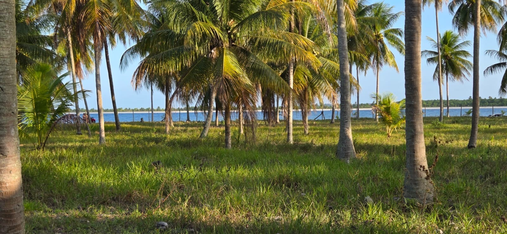
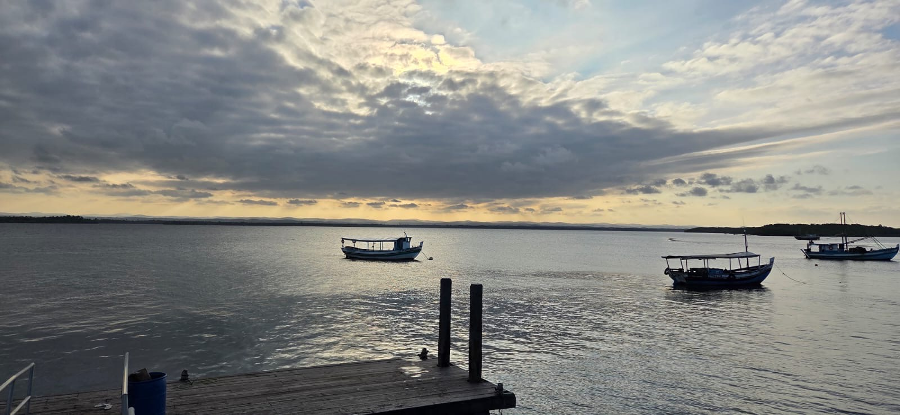
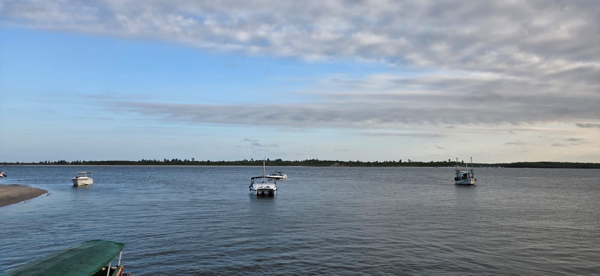
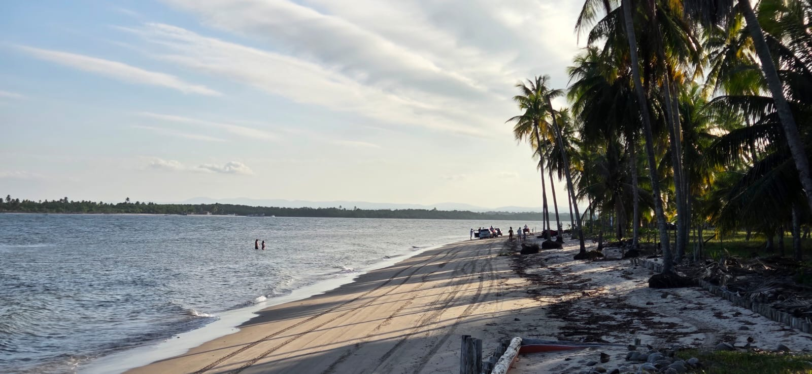
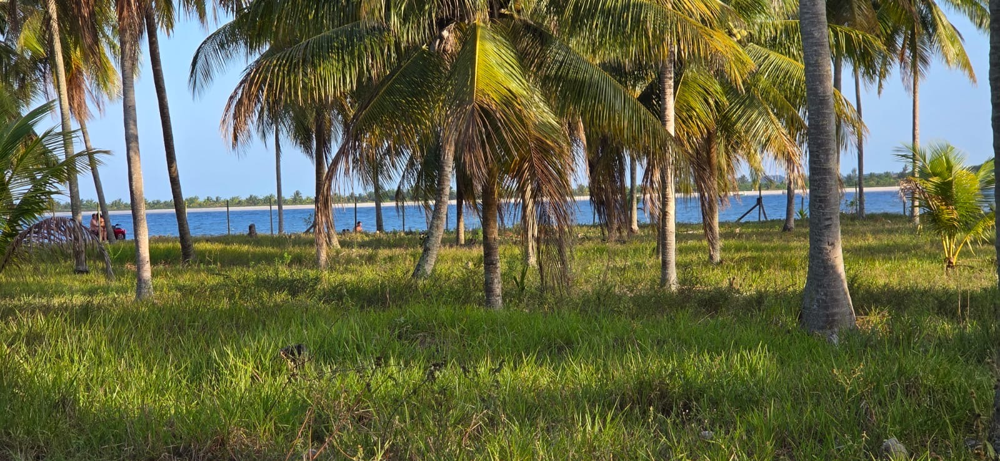
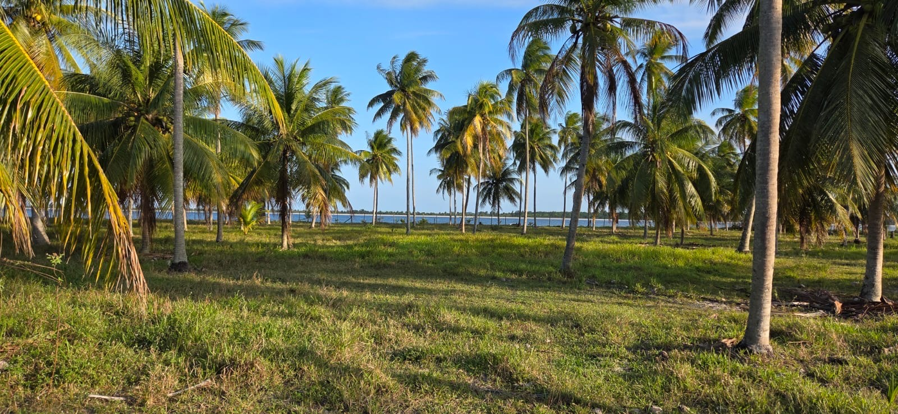

Barra de Serinhaém · Bahia
Um coqueiral a poucos passos da Baía de Camamu.
Três lotes de 1.000 m² em um povoado de pescadores na Costa do Dendê.
O lugar
Uma vila de pescadores entre o rio e a baía.
Barra de Serinhaém fica no município de Ituberá, no Baixo Sul da Bahia, onde o Rio Serinhaém encontra a Baía de Camamu. É um lugar de ritmo simples: barcos de pesca ancorados, coqueirais, praia de areia clara e águas calmas. Do outro lado da baía, a cerca de 7 km em linha reta, fica Barra Grande.
Barra de Serinhaém (BA) — não confundir com Sirinhaém (PE).


Os lotes
Três lotes. Mil metros quadrados cada.
Terrenos planos, com coqueiral, próximos à vila e a cerca de 100 m da praia. Para quem quer construir ou investir no litoral baiano.


Sob consulta, é possível conversar sobre lotes menores, de 500 m² ou 333 m².
Por que Barra de Serinhaém
Simples, tranquila, perto da água.
01
Natureza preservada
Coqueirais, rio e praia em um povoado tranquilo.
02
Perto da água
Cerca de 100 m da praia.
03
Vida local
Uma vila de pescadores com ritmo próprio.
Galeria
O terreno como ele é.
Fotos reais dos terrenos e da orla de Barra de Serinhaém.
Localização
Onde ficam os lotes.
Os três lotes ficam na borda da vila, ao longo da estrada que acompanha a orla. Use o mapa para ver a posição de cada um.
- ≈ 100 m até a praia
- ≈ 7 km até Barra Grande, em linha reta pela baía
Como chegar
De Salvador a Barra de Serinhaém.
A distância entre Salvador e Barra de Serinhaém (via Ituberá) é de cerca de 170 km se você utilizar a travessia de ferry-boat para a Ilha de Itaparica. Fazendo o trajeto exclusivamente por terra, contornando a Baía de Todos-os-Santos, a distância aumenta para cerca de 315 km. Como Barra de Serinhaém é uma vila isolada, a viagem sempre tem duas etapas: primeiro de Salvador até a sede de Ituberá e, depois, de barco ou veículo 4x4 até a vila.
Via ferry-boat
Mais rápida e cênica
- Ferry-boat: do Terminal de São Joaquim, em Salvador, ao Terminal de Bom Despacho, na Ilha de Itaparica (cerca de 1 hora).
- Estrada (BA-001): de Bom Despacho, siga pela BA-001 sentido Sul, passando por Nazaré e Valença, até Ituberá. Cerca de 155 km, por volta de 2h45.
- Chegada: em Ituberá, deixe o carro e faça a travessia final de lancha rápida (cerca de 35 minutos) pelo Rio Serinhaém até a vila.
Totalmente por terra
Sem ferry-boat, trajeto mais longo
- BR-324 e BR-101: saia de Salvador pela BR-324 até as proximidades de Feira de Santana e pegue a BR-101 sentido Sul.
- Acesso a Ituberá: siga pela BR-101 até Travessão (distrito de Camamu) ou dobre antes na BA-542 (sentido Valença) para acessar a BA-001 rumo a Ituberá. O tempo dirigindo desde Salvador é de cerca de 5 horas.
- Chegada: o acesso final a partir de Ituberá também é feito pelo rio.
De ônibus
Transporte público
- Atravesse como passageiro no ferry-boat ou nas lanchas rápidas do Centro Náutico (destino Mar Grande).
- No Terminal de Bom Despacho (Itaparica) há linhas diretas de ônibus até Ituberá ou Camamu.
- Desça na rodoviária de Ituberá e pegue um táxi ou mototáxi até o porto fluvial para embarcar na lancha rápida rumo a Barra de Serinhaém.
De Ituberá à Barra, de barco
A travessia final, pelo Rio Serinhaém
Os barcos saem de Ituberá por dois pontos principais: o Cais de Ituberá (normalmente usado quando a maré está mais cheia) ou a tradicional Ponte do Saici. Há duas categorias de embarcação no trajeto regular.
Lanchas rápidas
A opção mais ágil
- Tempo de viagem: cerca de 30 a 40 minutos.
- Ituberá → Barra de Serinhaém: geralmente de segunda a sábado, com saídas às 07:00, 10:00, 13:30 e 16:30.
- Barra de Serinhaém → Ituberá: as lanchas costumam passar pela vila às 06:00, 09:00, 11:40 e 15:00.
- Operadores locais também fazem passeios particulares sob agendamento.
Barcos convencionais
Rústica, mais lenta e mais barata
- Tempo de viagem: entre 1h30 e 2 horas descendo o rio.
- Horários: menos opções ao dia; geralmente um barco no início da manhã (por volta das 06:30) e outro no começo da tarde (por volta das 13:00) em dias de semana.
Importante: como a navegação depende das condições do rio e do movimento local, horários e pontos de embarque podem mudar conforme a época. Confirme as saídas com os barqueiros no Cais de Ituberá ou na Ponte do Saici ao chegar à cidade.
Tempos e distâncias são aproximados. Fale com a gente pelo WhatsApp para planejar a sua visita.
Perguntas
Perguntas frequentes.
Como é Barra de Serinhaém?
Barra de Serinhaém fica no município de Ituberá, no Baixo Sul da Bahia, onde o Rio Serinhaém encontra a Baía de Camamu. É um lugar de ritmo simples: barcos de pesca ancorados, coqueirais, praia de areia clara e águas calmas. Do outro lado da baía, a cerca de 7 km em linha reta, fica Barra Grande.
Como chego de Salvador?
Veja a seção “Como chegar” acima, com a rota pelo ferry-boat, a rota só por terra e a opção de ônibus.
Qual o preço?
Sob consulta, pelo WhatsApp.
Qual o tamanho dos lotes?
1.000 m² cada. Sob consulta, é possível conversar sobre lotes de 500 m² ou 333 m².
Posso visitar?
Sim — chame no WhatsApp para combinar uma visita.
É Sirinhaém, em Pernambuco?
Não. Barra de Serinhaém fica em Ituberá, na Bahia.